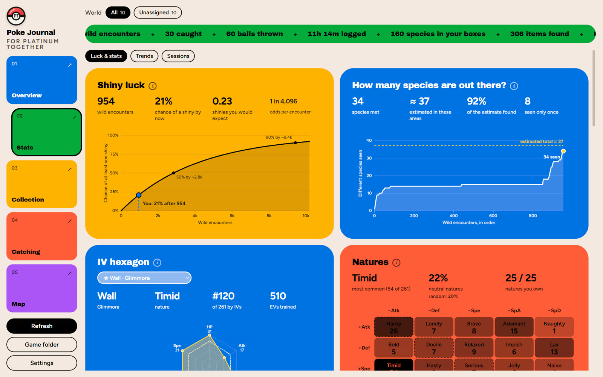
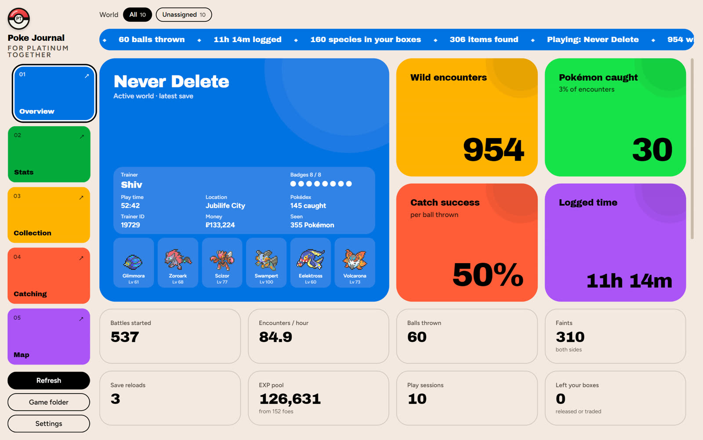
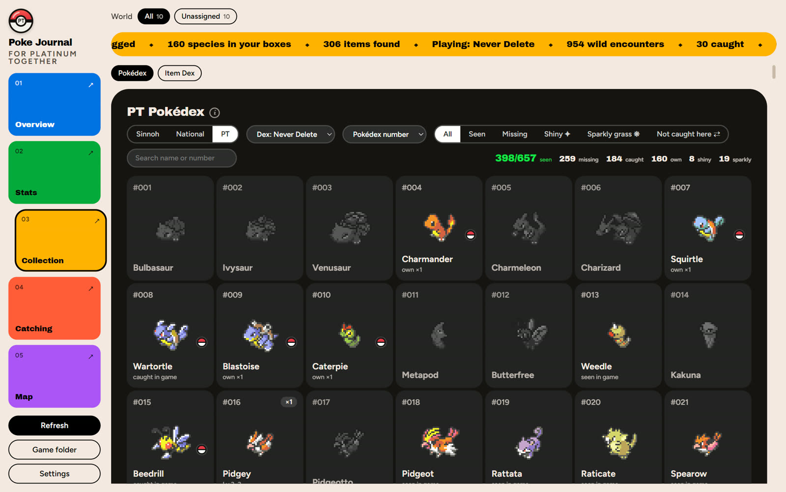
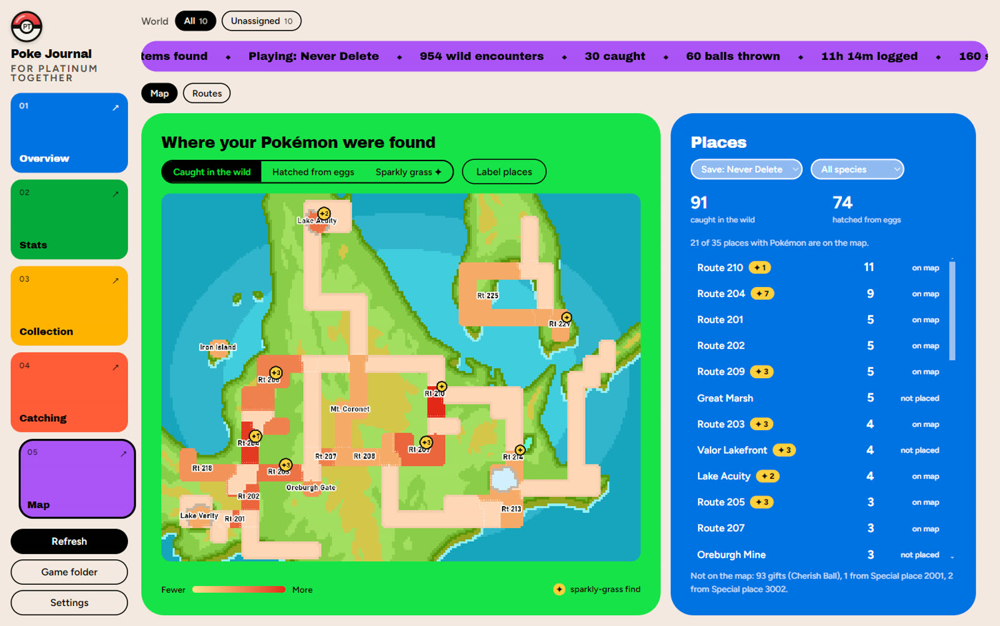

For Players
Everything starts with your own game. Your worlds, your catches, your luck. It is made for how you play, not for a leaderboard.
Scroll
Built around your own save, your worlds and your luck. More than a spreadsheet: PT Journal turns what the game logs into something you can read.
We believe your stats should feel personal, not generic. Real numbers from your own save. Detailed, but never overwhelming. That is why PT Journal reads your game right on your own PC, works out the odds for you, and keeps its wiki data up to date. Because a good run deserves more than a spreadsheet. It should feel just right.
How we think about it
Everything starts with your own game. Your worlds, your catches, your luck. It is made for how you play, not for a leaderboard.
Nothing is a guess. Your shiny odds against what really happened, your IVs against what random would give you, every ball against every throw.
It only reads. It never touches your game and nothing leaves your PC. Built on the community wiki, and free for everyone.
What you get




Why it is different
Open it in Chrome or Edge and point it at your game folder once. Or download the Windows app.
An early beta, so some things may be wrong. Tell us on GitHub.